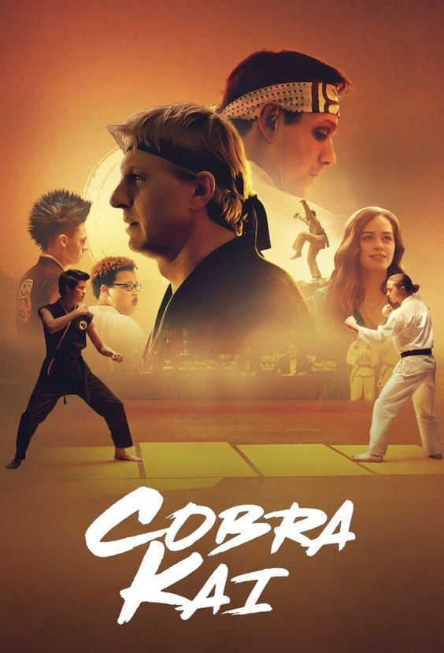

Cobra Kai es una serie de acción, comedia y drama que revive el mundo de Karate Kid, situándose 30 años después de los eventos del icónico torneo de 1984. La historia sigue a Johnny Lawrence, quien decide reabrir el dojo Cobra Kai para recuperar su vida, lo que reaviva su antigua rivalidad con Daniel LaRusso, ahora un exitoso hombre de negocios. Con nuevos y viejos personajes, la serie explora temas como la redención, el bullying, la amistad y la superación personal, mientras las tensiones entre las filosofías del karate se transmiten a una nueva generación de estudiantes. Cobra Kai mezcla hábilmente nostalgia y emoción, atrayendo tanto a fans de la trilogía original como a nuevas audiencias.
